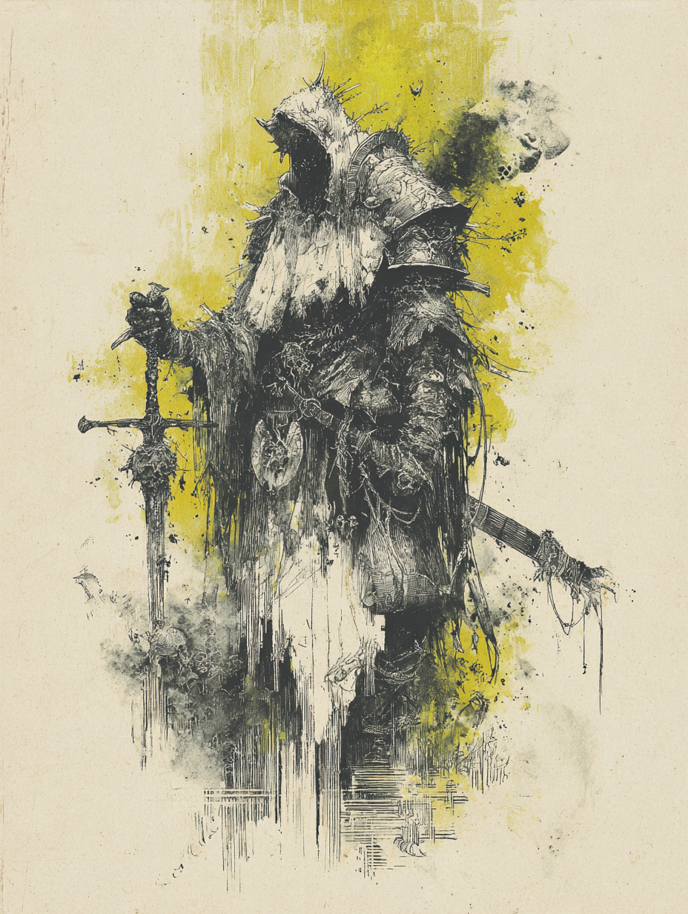

a scvm of no calling · briefly the holder of a scroll called the Lament of Eternity · the one who jumped into a worm

Dexid was a classless scvm — no priesthood, no guild, no calling beyond whatever the dying world saw fit to offer in the way of bones and broken tools. The sheet does not record a description, a backstory, or a home. The character was rolled to be played, played for a session, and lost in a dungeon that killed six of the seven souls that entered it. What follows is the residue.
| Name | Dexid |
| System | Voidbirth — a Mörk Borg–compatible adventure of cosmic horror and inevitable transformation |
| Class | None (classless scvm) |
| Description | Unrecorded on sheet |
| Status | Deceased — drowned in a fetid sludge soup while attempting to lift a fallen companion out of it |
No carrying-capacity penalty noted (Strength +8 = up to 9 items before −2 DR on Agility/Strength tests; on the sheet, the equipment list runs five lines).
Dexid had one named Power. The sheet lists it twice in two different ways — the formal name and the shorthand by which the character actually used it in play.
A scroll Dexid found. When the bearer crossed a threshold, they could chant the Lament and receive visions — from the future, from the past, or from the present — and potentially be transported somewhere else they had already been.
The transport was not guaranteed. The visions came regardless of whether the relocation did.
Presence + d4. Presence is 0, so up to 1–4 uses per day, capped at 4 as marked on the sheet (the circled "4" beside PRESENCE+d4 times per day).
The sheet lists two further blank Power lines. Nothing was written on them. Dexid never gained another Power.
Two mutations were inscribed in the Void Mutations box on the sheet. The sheet's annotations are terse; the mechanical detail recorded below is what is legible. Where the rules-text is incomplete, the file marks it.
The sheet reads "Toxic glands — d6 dmg, d4 / 14" or similar. The exact mechanic is not fully transcribed; the recoverable shape is a damage die (d6) and a second die (d4) — likely a duration or save threshold against a target number near 14.
Full rules-text not fully recorded on sheet
Confirmed mutation. Mechanical effect not detailed on the sheet beyond the entry itself.
Full rules-text not recorded on sheet
−d2 to incoming damage. The lightest tier on the Mörk Borg armour track; no penalty to Agility-related tests. Dexid wore nothing heavier.
Carrying capacity: Strength +8 items, or take −2 DR on Agility/Strength tests. The list below reflects the sheet at the time of death, including struck-through entries.
Crossed out on the sheet. Dexid handed it to another player.
None. The field is empty.
Mörk Borg's Omens are unspent fate — each may be expended to re-roll a check, ignore a critical fumble, lessen damage by d4, or remove a critical hit (DR+4 / NO CRIT/FUMBLE / MAX DMG, per the sheet's marginal reminder).
The Voidbirth-specific track at the bottom of the sheet.
Not tracked at time of death — the pips were left blank or unmarked. No value recorded
A short life. One dungeon. Two standout moments — one heroic, one fatal.
Dexid found a scroll. The chant on it was called something like the Lament of Eternity — on the sheet, the player shortened it to Time Slip. The mechanic, as remembered: when crossed a threshold, the bearer could chant the Lament and receive a vision — from the future, the past, or the present — and potentially be transported somewhere they had already been.
The emphasis on the word potentially would matter later.
The party fought a massive worm. In a clutch moment, Dexid jumped into its mouth and used the time-slip scroll, hoping to teleport out.
It didn't move them anywhere. The chant fired, the vision came, but Dexid stayed exactly where they were — which was inside the worm's belly. Because they were inside, the worm's armour didn't apply. Dexid spent the next stretch of the encounter dealing extensive damage from the inside before eventually cutting their way out.
The Lament did not save them. It put them in a position to kill the worm anyway.
Later in the same dungeon, a rickety bridge. A companion fell off it, into a horrid fetid sludge soup beneath.
Dexid tried to lift them out. The attempt failed, the footing failed, the bridge failed, and Dexid fell in too. The sludge took them. HP went to 0. There was no Lament for this — no threshold to cross, no scroll for being pulled under.
Killed not by the worm. Not by the dungeon's worst monster. Killed reaching for someone falling. // the actual cause of death
Of seven characters who entered the dungeon, one survived. That survivor walked out at 1 HP.
Dexid was one of the six who did not.
Dexid carried a femur, a crowbar, a zweihänder, a sharp needle, a sack, and a scroll that mostly didn't work. They jumped down a worm's throat on purpose, and they died trying to save someone from drowning. That is, in the bookkeeping of a dying world, not the worst ledger to leave behind.